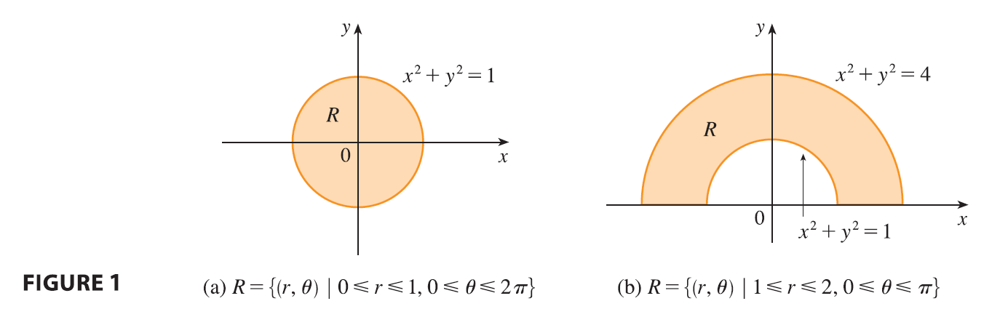
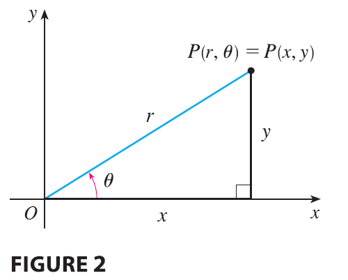
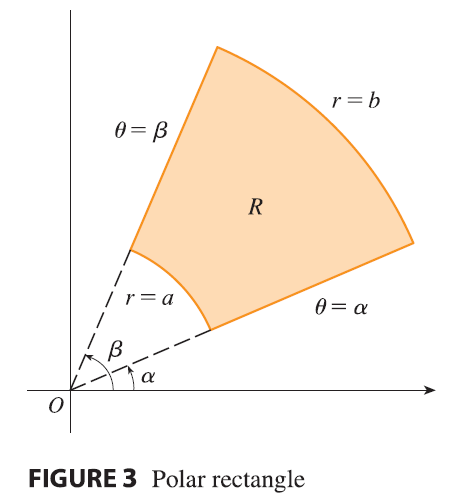

Suppose that we want to evaluate a double integral \(\iint_R f(x, y) dA\), where \(R\) is one of the regions shown in Figure 1.

In either case the description of \(R\) in terms of rectangular coordinates is rather complicated, but \(R\) is easily described using polar coordinates.

Recall from Figur2 that the polar coordinates \((r, \theta)\) of a point are related to the rectangular coordinates \((x, y)\) by the equations \[ r^2 = x^2 + y^2 \quad x = r \cos \theta \quad y = r \sin \theta \]
The regions in Figure 1 are special cases of a polar rectangle \[ R = \{(r, \theta) | a \le r \le b, \alpha \le \theta \le \beta\} \] which is shown in Figure 3.
